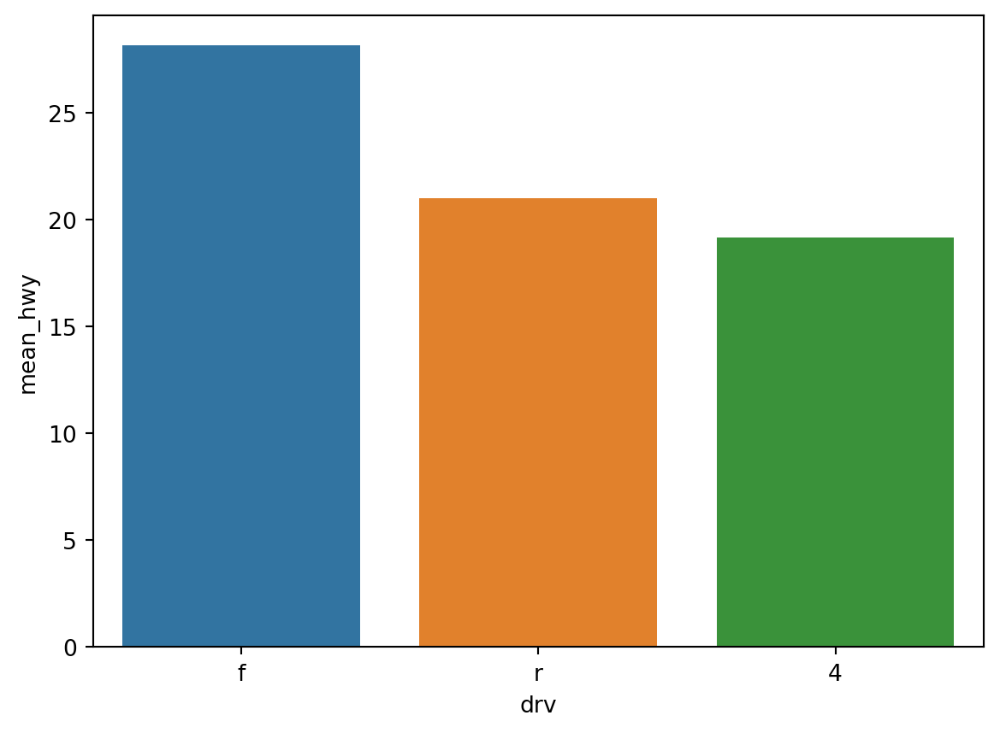

import pandas as pd
mpg=pd.read_csv('mpg.csv')
mpg.shape
import seaborn as sns
import matplotlib.pyplot as plt
import plotly.express as px파일 불러오기
scatterplot
- seaborn을 사용한 산점도도
# 사이즈 조정
plt.figure(figsize=(5,4))
sns.scatterplot(data=mpg,
x='displ',y='hwy',
hue='drv')\
.set(xlim=[3,6],ylim=[10,30])
plt.show()
plt.clf()<Figure size 672x480 with 0 Axes>- plotly를 사용한 산점도 316p
px.scatter(data_frame=mpg,x='displ', y='hwy', color='drv')barplot
# 막대그래프
df_mpg=mpg.groupby('drv',as_index=False)\
.agg(mean_hwy=('hwy','mean'))\
.sort_values('mean_hwy',ascending=False)
# 유니크한 값만 보고 싶을 떄
mpg['drv'].unique()
#
df_mpg
sns.barplot(data=df_mpg,
x="drv", y="mean_hwy",
hue="drv")
plt.show()
plt.clf()
<Figure size 672x480 with 0 Axes>barplot
df_mpg = mpg.groupby('drv', as_index= False)\
.agg(n=('drv','count'))
df_mpg['drv'].unique()
# 0번쨰 열 옆에 y 값이 들어갈 값이 있는 자료가 필요함
sns.barplot(data=df_mpg, x='drv', y='n',hue='drv')
plt.show()
plt.clf()<Figure size 672x480 with 0 Axes>countplot
# raw_data가 들어감감
sns.countplot(data=mpg, x='drv', hue='drv', order=['4','f','r'])
plt.show()
plt.clf()<Figure size 672x480 with 0 Axes>- plotly를 사용한 산점도 316p
px.bar(data_frame = df_mpg, x='drv', y='n', color='drv')상자 그림 만들기
sns.boxplot(data=mpg, x='drv', y='hwy', hue='drv')
plt.show()
plt.clf()<Figure size 672x480 with 0 Axes>- plotly를 사용한 상자그림림
px.box(data_frame = mpg, x='drv', y='hwy', color='drv')204p 혼자서 해보기
1. mpg데이터의 cty와 hwy로 된 산점도 그래프
mpg=pd.read_csv('mpg.csv')
sns.scatterplot(data=mpg,x='cty',y='hwy',hue='drv')
plt.show()
plt.clf()<Figure size 672x480 with 0 Axes>- plotly를 사용한 상자그림
px.scatter(data_frame=mpg,x='cty',y='hwy',color='drv')2. midwest데이터의 cty와 hwy로 된 산점도 그래프
midwest=pd.read_csv('midwest.csv')
sns.scatterplot(data=midwest, x='poptotal', y='popasian').set(xlim=[0,500000],ylim=[0,10000])
plt.show()
plt.clf()<Figure size 672x480 with 0 Axes>- plotly를 사용한 상자그림
px.scatter(data_frame=midwest,x='poptotal', y='popasian', range_x=[0,500000],range_y=[0,10000] )